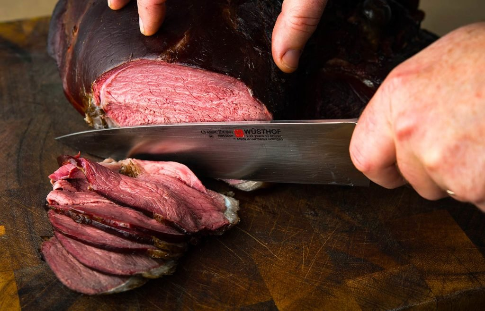

This is a very simple preparation. The point here is to allow the rich flavor of the wild vension to shine through.First lightly cover the roast in olive oil, then generouly salt and pepper all sides.
Then sear the roast on all sides in a smoking hot cast iron pan. About 1-2mins on each side including the edges. After the roasted is throughtly sear and all the juices are locked inside, put the roast in a oven set to 425 degress for 4-7 minutes depending on size